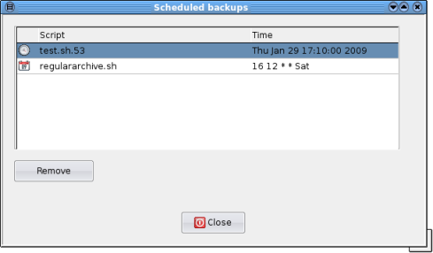

| Prev | Home | Next |
DarGUI uses the unix program cron to schedule regular backups and atd to schedule backups which are to be performed once only. To view a list of scheduled backups select Scheduling->Schedule manager from the main menu. This option is disabled if neither atd nor cron are running when DarGUI is started.
Scripts which are to be executed once only (using atd) are indicated by a clock icon. The script name has a number suffix: this is the atd job number. The time and date when the script will be executed is shown in the "Time" column.
Scripts which are to executed more than once (by cron) are indicated by a calendar icon. The time column shows the cron variables in the order Minute, Hour, Day of Month, Month, Day of Week. An asterisk ( * ) means that the command will run on any value of that variable. For example the variable set "16 12 * * Sat" will be executed every Saturday at 12:16 hours.
Further guidance on using cron scheduling:
Cancelling scheduled backups - to delete a scheduled backup select the entry which you want to cancel and select the "Remove" button. The backup will be cancelled and the associated script will be deleted.
Location of scheduled backup scripts - scheduled backup scripts are stored in the subdirectories atscripts and cronscripts of the dargui configuration directory.
Scheduled backup logs - output from backup scripts scheduled using DarGUI is stored in the file dargui.log in the dargui configuration directory. This log file can be deleted if it grows too big.
| Prev | Home | Next |
| Testing archive integrity | Up | User preferences |